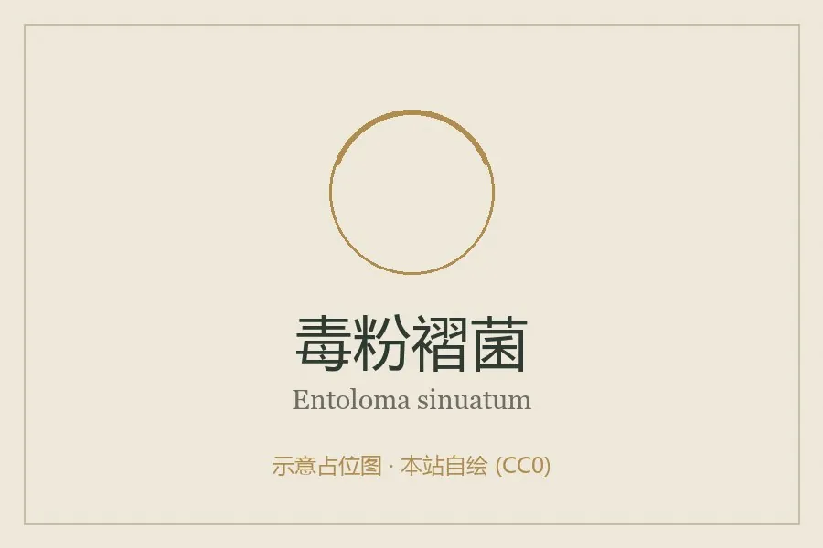

真菌 · 真菌界
毒粉褶菌 Entoloma sinuatum

粉褶菌科蘑菇，菌盖灰白至铅灰、菌褶成熟后变粉红，属剧毒菌，误食可致剧烈胃肠炎，须严禁采食。
- 分类
- 门担子菌门纲伞菌纲目伞菌目科粉褶菌科属粉褶菌属
- 栖息环境
- 阔叶林与混交林地上，与栎类等形成外生菌根，夏秋发生
- 地理分布
- 欧洲与北半球温带林地分布，中国华北、西南有记录
- 保护级别
- 暂无评估；种群随老龄林减少而下降
物种志
毒粉褶菌的子实体中等至大型，菌盖直径 5–15 厘米，初期凸起，后平展，中央稍凸，表面灰白、铅灰至淡黄褐色，光滑，湿时微黏，边缘内卷。菌肉白色，厚，气味带粉味或微弱黄瓜味。菌褶初期淡黄，成熟后因孢子而呈粉红色，弯生至离生，较宽。菌柄长 6–15 厘米，直径 1.5–3 厘米，白色至灰白，粗壮，表面有纵纹。孢子印粉红色，孢子多角形。
毒粉褶菌生于阔叶林或针阔混交林地上，与栎、山毛榉等形成外生菌根，夏秋 7–10 月发生。它是著名的剧毒菌，误食后 30 分钟至数小时出现剧烈恶心、呕吐、腹痛、腹泻，可致脱水与电解质紊乱，儿童与老人风险更高。它与可食的盾状粉褶菌、以及某些口蘑、丝膜菌外形相似，是欧洲蘑菇中毒的常见原因。粉褶菌属种类鉴定困难，凡菌褶成熟后变粉红、孢子印粉红的林地蘑菇，均不宜采食。
形态与习性
- 菌盖直径 5–15 厘米，灰白至铅灰，光滑
- 菌褶淡黄后变粉红，弯生至离生
- 菌柄长 6–15 厘米，粗壮，白色有纵纹
- 孢子印粉红色，孢子多角形
- 毒性剧毒，误食致剧烈胃肠炎，禁止采食
- 易混淆与盾状粉褶菌、口蘑类相似，极易误判
趣味知识
- 毒粉褶菌是欧洲最常见的蘑菇中毒元凶之一，常被误认成可食的粉褶菌或口蘑。
- 它的菌褶成熟后变成粉红色，这是粉褶菌属的标志，也是重要的警示。
- 误食后 30 分钟至数小时发作，剧烈呕吐腹泻可致脱水和电解质紊乱。
- 在欧美，它还有“铅色蘑菇”的俗称，形容菌盖那种铅灰的色调。